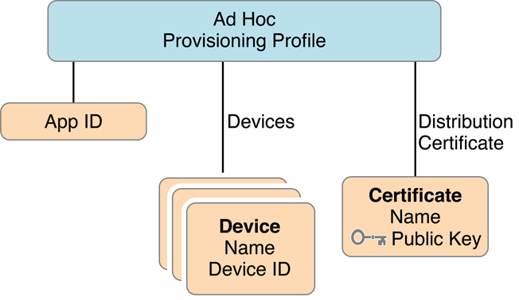
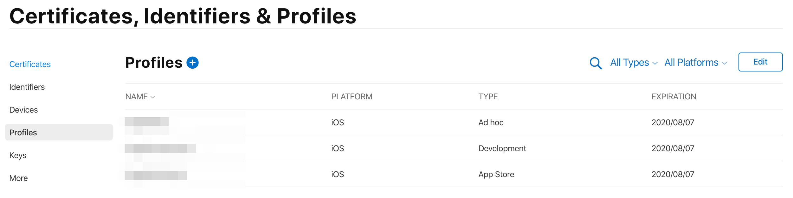
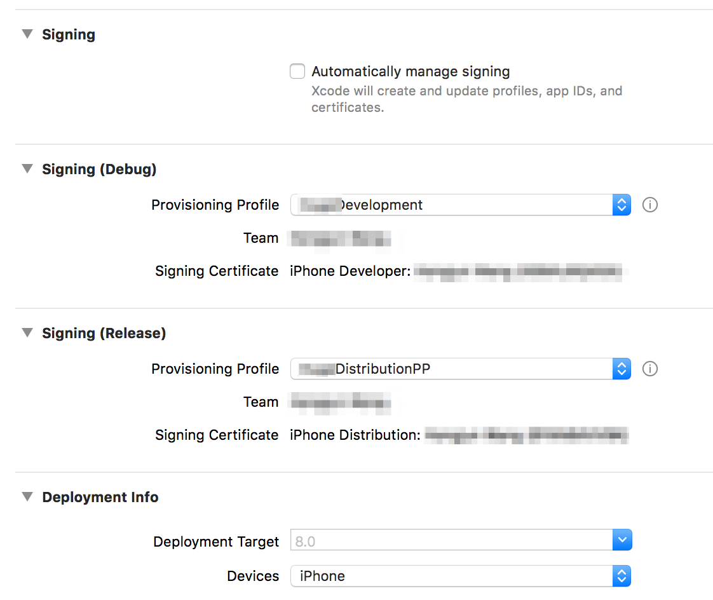
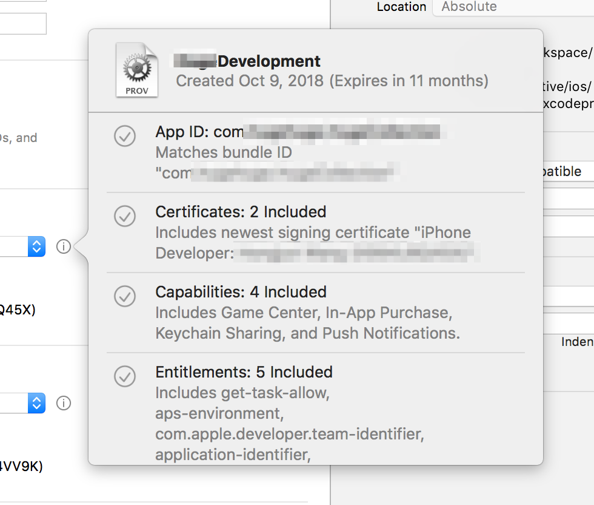

在 iOS 打包发布的时候遇到了一些问题，所以稍微研究了下 iOS 打包时涉及到的一些概念以及打包安装流程，希望能加深下印象。
What’s Provisioning Profiles?
类似于安卓应用必须经过签名才可以安装到手机上，同样的，在 iOS 设备上，只有经过 Apple 认证的应用才能被安装。在开发 iOS 应用时，我们难免需要使用真机测试，为了使测试版应用可以在真机上安装，我们就需要使用 Provisioning Profiles。
那么，什么是 Provisioning Profiles ?
官方是这么解释的：
A provisioning profile is a collection of digital entities that uniquely ties developers and devices to an authorized iPhone Development Team and enables a device to be used for testing. A Development Provisioning Profile must be installed on each device on which you wish to run your application code. Each Development Provisioning Profile will contain a set of iPhone Development Certificates, Unique Device Identifiers and an App ID. Devices specified within the provisioning profile can be used for testing only by those individuals whose iPhone Development Certificates are included in the profile. A single device can contain multiple provisioning profiles.
首先，我们需要有一个开发者账号，这个账号是可以被整个开发团队（也就是 iPhone Development Team）共享的。通过 Apple 认证后，这个开发者账号就可以通过添加 Provisioning Profiles 来关联测试设备了。也就是说 Provisioning Profiles 起到了一个桥梁的作用，它会对应用进行验证，决定应用能否被安装到设备上。另外，只有 Provisioning Profiles 安装到测试设备上之后我们的测试应用才能安装成功，一台测试设备可以有多个 Provisioning Profiles。
Provisioning Profiles 中包含以下三部分内容：
- iPhone Development Certificates: 开发者证书，用于应用签名。
- Unique Device Identifiers: 包含一个设备列表，用于确认应用可在哪些设备上运行。
- App ID: 应用 ID，对应于 xCode 项目中的
bundle identifier。

How to use it?
了解了 Provisioning Profiles 之后，我们就可以学着如何使用它了。
首先，我们需要登入开发者账户，然后进入 Certificates, Identifiers & Profiles，接下来我们就可以在这里添加 Provisioning Profiles 了。

除此之外，从上面的截图中可以看出，我们还可以在这里添加：
- Certificates，即
Provisioning Profiles中的 iPhone Development Certificates，该证书包含一对公钥和私钥，并且会被添加到你的 Keychain 中，可以通过 Mac 上自带的 Keychain Access 查看到（login -> My Certificates） - Keys，与证书相似，通过 Key 我们可以配置、认证并使用 Apple 的服务。相比证书的优点是不会过期，而且在创建后可以修改所使用的 Apple 服务的种类及数量。
- Identifiers，创建各种 ID 的地方，包括上面
Provisioning Profiles中的 App ID 也是在这里创建的。 - Devices，测试设备列表，对应于
Provisioning Profiles中的 Unique Device Identifiers。
在创建证书的时候我们还需要使用到 CSR (Certificate Signing Request)，即证书签名请求文件。它里面包含了一串加密文字信息，当申请证书的时候我们需要将这个文件递交给认证机构（Apple）。
这里提供一个创建并配置 CSR、证书及 Provision Profile 等文件的详细文档，来自友盟，这里不得不佩服友盟的文档写的是真好。
How does it work?
熟悉了以上几个概念后，我们就可以试着理解应用打包安装过程了。

首先看下上面这张截图，在 Signing 时需要提供 Provisioning Profile，我们在添加完 Provisioning Profile 后就可以把它下载下来，并且导入到 xCode 就行了。
可以看到我这里分别在 Debug 和 Release 的 Signing 中使用了不同的 Provisioning Profile，其实他们唯一的区别是，Release 版可以上传到 App Store 经过 Apple 的审核并签名后被安装到任何 iOS 设备上，而 Debug 版只能被安装到该 Provisioning Profile 绑定了的设备上。

如上图，在配置了 Provisioning Profile 之后，xCode 首先会对一些基本信息进行验证，如果有不匹配的项会提示错误信息。
以 Debug 版为例，在打包安装会经历以下过程：
- 首先，
Provisioning Profile会到 Keychain 中寻找匹配的 Certificate，即 Signing 中的 Signing Certificate - xCode 使用该 Certificate 对 app 进行签名
- 在安装时，首先会对设备的 UUID 和
Provisioning Profile中的设备列表的 ID 进行匹配，匹配成功才会被安装，同时所需的 Entitlements 等信息也要与 AppID 中配置的一致 - Keychain 中的私钥会用于和 Certificate 中的公钥进行验证（私钥如果丢失那么该 Certificate 也将失效，需要重新创建，建议导出私钥 .p12 文件并备份）
在打包安装的过程中，只有所有信息都验证通过后，应用才能安装成功并被启动。对于发布版而言，如果想要安装到真机上则必须使用类型为 Ad Hoc 的 Provisioning Profile 才可以。
参考文章：